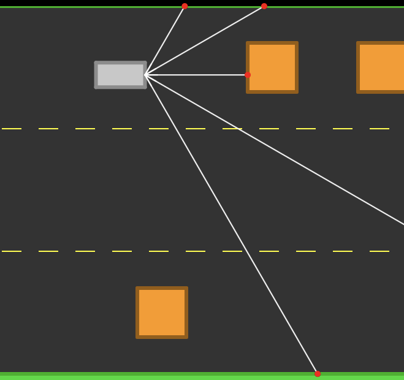
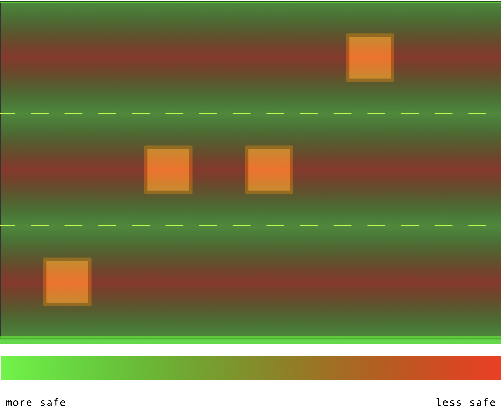

• Project • Genetic • Driving • |
|||||||||||||||||||||||||||||||||||||||||||||||||||||||||||||||||||||||||||||||||||||||||||||||||||||||||||||||||||||||||||||||||||||||||||||||||||||||||||||||||||||||||||||||||||
|---|---|---|---|---|---|---|---|---|---|---|---|---|---|---|---|---|---|---|---|---|---|---|---|---|---|---|---|---|---|---|---|---|---|---|---|---|---|---|---|---|---|---|---|---|---|---|---|---|---|---|---|---|---|---|---|---|---|---|---|---|---|---|---|---|---|---|---|---|---|---|---|---|---|---|---|---|---|---|---|---|---|---|---|---|---|---|---|---|---|---|---|---|---|---|---|---|---|---|---|---|---|---|---|---|---|---|---|---|---|---|---|---|---|---|---|---|---|---|---|---|---|---|---|---|---|---|---|---|---|---|---|---|---|---|---|---|---|---|---|---|---|---|---|---|---|---|---|---|---|---|---|---|---|---|---|---|---|---|---|---|---|---|---|---|---|---|---|---|---|---|---|---|---|---|---|---|---|---|---|
| Author : | |||||||||||||||||||||||||||||||||||||||||||||||||||||||||||||||||||||||||||||||||||||||||||||||||||||||||||||||||||||||||||||||||||||||||||||||||||||||||||||||||||||||||||||||||||
| Date : | |||||||||||||||||||||||||||||||||||||||||||||||||||||||||||||||||||||||||||||||||||||||||||||||||||||||||||||||||||||||||||||||||||||||||||||||||||||||||||||||||||||||||||||||||||
| Parameters | |||||||||||||||||||||||||||||||||||||||||||||||||||||||||||||||||||||||||||||||||||||||||||||||||||||||||||||||||||||||||||||||||||||||||||||||||||||||||||||||||||||||||||||||||||
| Play / Pause | Normal / debug | ||||||||||||||||||||||||||||||||||||||||||||||||||||||||||||||||||||||||||||||||||||||||||||||||||||||||||||||||||||||||||||||||||||||||||||||||||||||||||||||||||||||||||||||||||
| Mutation Rate | |||||||||||||||||||||||||||||||||||||||||||||||||||||||||||||||||||||||||||||||||||||||||||||||||||||||||||||||||||||||||||||||||||||||||||||||||||||||||||||||||||||||||||||||||||
|
0.2 |
|||||||||||||||||||||||||||||||||||||||||||||||||||||||||||||||||||||||||||||||||||||||||||||||||||||||||||||||||||||||||||||||||||||||||||||||||||||||||||||||||||||||||||||||||||
| Number per Generation | |||||||||||||||||||||||||||||||||||||||||||||||||||||||||||||||||||||||||||||||||||||||||||||||||||||||||||||||||||||||||||||||||||||||||||||||||||||||||||||||||||||||||||||||||||
| Fitness Mode | |||||||||||||||||||||||||||||||||||||||||||||||||||||||||||||||||||||||||||||||||||||||||||||||||||||||||||||||||||||||||||||||||||||||||||||||||||||||||||||||||||||||||||||||||||
| Parents Selection | |||||||||||||||||||||||||||||||||||||||||||||||||||||||||||||||||||||||||||||||||||||||||||||||||||||||||||||||||||||||||||||||||||||||||||||||||||||||||||||||||||||||||||||||||||
|
|||||||||||||||||||||||||||||||||||||||||||||||||||||||||||||||||||||||||||||||||||||||||||||||||||||||||||||||||||||||||||||||||||||||||||||||||||||||||||||||||||||||||||||||||||
| Explanations | |||||||||||||||||||||||||||||||||||||||||||||||||||||||||||||||||||||||||||||||||||||||||||||||||||||||||||||||||||||||||||||||||||||||||||||||||||||||||||||||||||||||||||||||||||
What is this project ?We want to find the right parameters for a vehciule to survive as long as possible. Let say that more than 2 minutes of survival would be a proof that the solution we are applying is giving positive signs of advancement.  Here is a car in front of obstacles, detecting the first one of them and the road boarders throught its captors. The information given by the captors are the input of a function that give to the car a direction to follow.
\(S(i_1, i_2, i_3, i_4, i_5) =
\frac{1}{1 + e^{i_1w_1 + i_2w_2 + i_3w_3 + i_4w_4 + i_5w_5}}\)
This is the function used by cars to drive. The weights \(w_1\), \(w_2\), \(w_3\), \(w_4\), \(w_5\) are what we want to optimize. We want to find a value for each of them that give the better output as possible, so indicate a safe position that must be reached by the vehicule to survive. What solution could we use ?
Genetic Algorithm could help
us here to get a good solution.
We could notice that the method based on rank is a bit more balanced. It could help us to give more chance to vehicule with low fitness. The advantge is whith vehicules that have mostly poor paramters but one very good, we don't want to loose this paramters by avoiding these vehicule to have a chance give this parameters to descendents. In addition, it is important that some mutation could happend time to time. In contrary, too many of these mutations could cause instability and lose in the heritage. We could control the rate of these mutation into the parameters panel. A larger population improove the performance of the algorithm. This result is similar to throwing a dice : with one dice, we only have 1/6 probability to get a 6, but throw hundreds of dice and the probability to get at least one 6 is higger. However, as our computers have to run the simulation, it may be difficult to manage too many vehicules at the same time. We have to find a compromise for this specific parameters that we could also set into the associated panel.
Is it working ?YES !We may all have experienced an improovement into the top score, a proof that the algortihm set is helping us to find right paramters. BUT Depending of our parameters, we may have not reached the 2 minutes goal that we fixed to ourselves, or at least not during the time that we ran the simulation. It goes the same for the top score of our first generation, randomly generated that could already very high, 40 seconds and higher for example, a lot of the process is based on luck. It could be frustating sometimes. Plus, the simulation is becoming very slow as the top score is increasing. When cars are being tested, no new cars are genereted and if a car perform during 50 seconds when the top score is 55 seconds, this means that we "wasted" 50 seconds. Plus, as we said, the performance of our algorithm is derictly related to the parameters that we have set, then may we try again with other one to get better performances. Moreover, we could encounter some "issues" during our optimisation procees. As we could remark, there is position on the road that are safe : nothing could happen to a car that stay there because no obstable could get there.  This picture show these particular positions. As driver, we know that we can not stay between lines like that, but the simulation doesn't have such rules and neither the fitness function punish this kind of behavior, so why a car of our simulation would do otherwise ? It is a kind of local extremum that we could get stuck into. We can also think that the cars could be imporved, with a neural network with more layers, with more captors, and even more that the whole simulation could be modificated to be more real, more relevant with obstacle spawning everywher on the road, colision between cars, cars driving on 2 axes, non linear road, and so on... All of this is true, but our main goal was to get right parameters for the cars throuhgt a genetic algorithm, and so did we ! 😄 So let's celebrate for this achievement, take a little rest for now and then, why not interesting ourselves into Neuro Evolving of Augmenting Topologies. |
|||||||||||||||||||||||||||||||||||||||||||||||||||||||||||||||||||||||||||||||||||||||||||||||||||||||||||||||||||||||||||||||||||||||||||||||||||||||||||||||||||||||||||||||||||